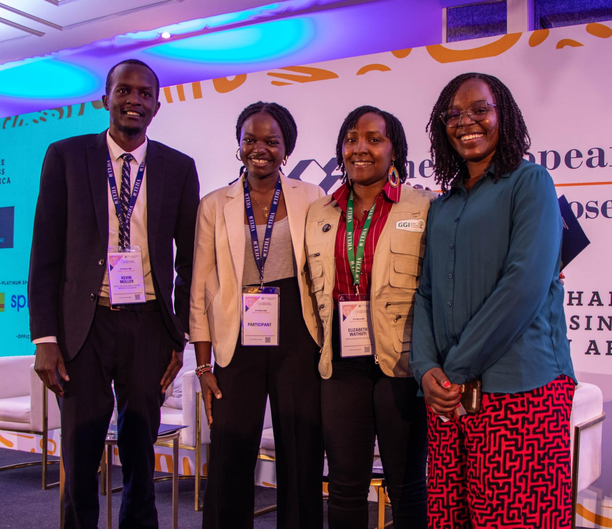

Video Gallery
Highlights from our Africa Day celebrations and events.
Kenya Independence Day
A message about the meaning of freedom
Africa Day — Team Nigeria
Celebrating at USIU
Sierra Leone Retold
Africa Day celebrations
Prof. PLO Lumumba on Leadership
Africa Day keynote at USIU